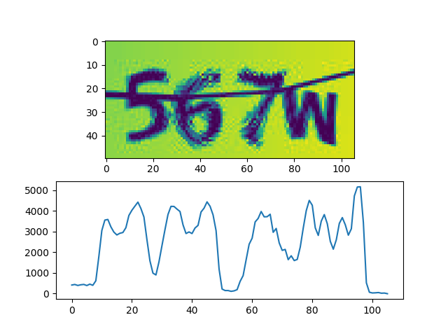
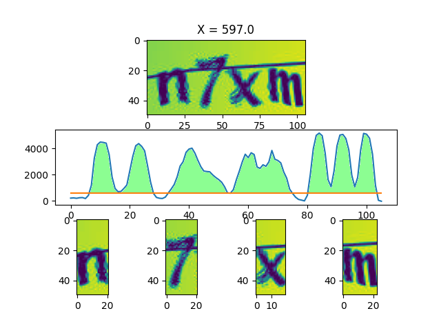
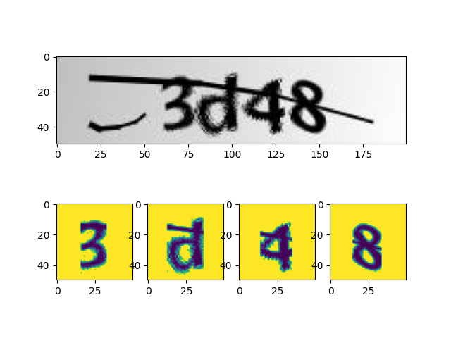
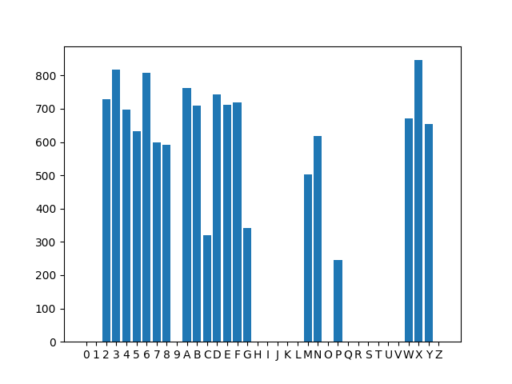
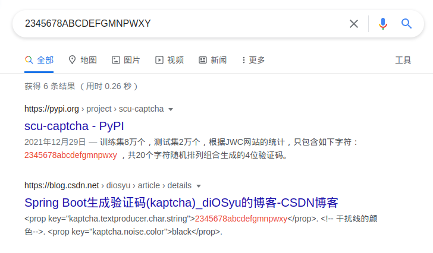

早在新生报到时，我就萌生了识别验证码并模拟登录的想法，无奈当时技术有限，最终未能达到目标。去年用 numpy 手写打卡系统验证码识别器后，自动脚本 一直运行得还算稳定，这也给了我信心，让我继续挑战 迎新系统 的验证码：
前期工作
特征分析
乍一看好像挺吓人，随机字号、随机倾斜、随机模糊（可能这模糊是 jpg 算法搞的）,甚至还有一条横线，但当我们叠图之后，事情开始变得逐渐明朗起来：
1
2
3
4
5
6
7
8
9
10
11
12
13
14
15
16
17
18
19
20
21
22
23
24
25
|
import os
import cv2
import numpy as np
import matplotlib.pyplot as plt
overlay = None
files = os.listdir('../data/raw_image')
for file in files:
image = cv2.imread(f'../data/raw_image/{file}')
image = cv2.cvtColor(image, cv2.COLOR_RGB2GRAY)
if overlay is None:
overlay = np.zeros(image.shape)
overlay += image
if overlay is not None:
overlay = (overlay * 255 / np.max(overlay)).astype(np.uint8)
print(overlay.shape)
plt.subplot(2, 1, 1)
plt.imshow(overlay)
plt.subplot(2, 1, 2)
plt.plot(np.sum(255 - overlay, axis=0))
plt.show()
|

左侧的随机短横线几乎不会与文字发生接触，那么我们直接将其裁掉即可，同样地，在右侧裁剪掉一块空白区域，以便后续识别。
同时我在下方绘制了一张折线图，为原图反色后沿纵向将各个像素值累加后得到的结果。不难注意到由于背景渐变色的存在，折线整体有一个从左至右由高到低的趋势，修正后，得到了这样的效果：

下面的步骤，可能看起来会比较复杂，实际上原理却很简单：使用一根横向的「扫描线」自下而上扫描整个折线图，考虑所有被折线图和扫描线围成的部分，不妨将其称为「域」，当底面长度不小于 10 的「域」的数量为 4（字符数）时，认为这是一个较好的切分：
1
2
3
4
5
6
7
8
9
10
11
12
13
14
15
16
17
18
19
20
21
22
23
24
25
26
27
28
29
30
31
32
33
34
35
36
37
38
39
40
41
42
| import os
import cv2
import numpy as np
import matplotlib.pyplot as plt
files = os.listdir('../data/raw_image')
for file in files:
image = cv2.imread(f'../data/raw_image/{file}')
image = cv2.cvtColor(image, cv2.COLOR_RGB2GRAY)
sumvirt = np.sum(255 - image, axis=0)
line = 3088 - 12.04 * np.arange(0, 200)
sumvirt = (sumvirt.astype(np.float64) - line)[52:158]
for x in np.arange(0, sumvirt.max()):
norm = np.where(sumvirt > x, 1, 0)
diff = np.append(norm, 0) - np.append(0, norm)
last, results = 0, []
for i in range(0, len(diff)):
if diff[i] == 1:
last = i
elif diff[i] == -1 and i - last >= 10:
results.append((last, i))
if len(results) == 4:
plt.subplot(3, 1, 1)
plt.title(f'X = {x}')
plt.imshow(image[:, 52:158])
plt.subplot(3, 1, 2)
plt.plot(sumvirt)
plt.plot(np.full(sumvirt.shape, x))
print(results)
for i in range(4):
plt.subplot(3, 4, 9 + i)
plt.imshow(image[:, 52:158][:, range(*results[i])])
plt.show()
break
|

简单二值化一下，贴到白色背景图上，这里放一张和原图的对比：

爬取数据集
接下来就是模拟登录获取训练集了，由于网站会将帐号密码用 RSA 算法加密，再提交到服务器。虽然也可以用 Python 来模拟登录，但逆向 js 代码并找出它的操作逻辑未免过于麻烦，于是这里直接使用 puppeteer + express 计算加密：
1
2
3
4
5
6
7
8
9
10
11
12
13
14
15
16
17
18
19
20
21
22
23
24
25
26
27
28
29
30
31
| 'use strict'
const path = require('path')
const express = require('express')
const puppeteer = require('puppeteer')
!(async () => {
const browser = await puppeteer.launch({
args: [
`--user-data-dirs=${path.join(__dirname, '.chromium')}`
]
})
let page = await browser.newPage()
await page.goto('http://yxxt.hnu.edu.cn/yxxt/web/xsLogin/login.zf')
await page.waitForFunction(() => RSAKey ?? false)
let app = express()
app.use(require('body-parser').urlencoded())
app.post('/encrypt', async (req, res) => {
console.info('New encrypt request!')
let enc = await page.evaluate(({src, modulus, exponent}) => {
let rsaKey = new RSAKey()
rsaKey.setPublic(b64tohex(modulus), b64tohex(exponent))
return hex2b64(rsaKey.encrypt(src))
}, req.body)
res.send(enc)
})
app.listen(34567, () => {
console.info('Server started, listening...')
})
})()
|
与之对应的 Python 代码，用于验证 tesseract 的识别结果，这里只需要确认验证码是否正确，所以帐号和密码都可以乱写（拼音缩写变量名全是从网站的 js 抄的，如果看得难受还请放过我 இωஇ）：
1
2
3
4
5
6
7
8
9
10
11
12
13
14
15
16
17
18
19
20
21
22
23
24
25
26
27
28
29
30
31
32
33
34
35
36
37
38
39
40
41
42
43
44
45
46
47
48
49
50
51
52
53
54
55
56
57
58
59
60
61
62
63
64
65
66
67
68
69
70
71
72
73
74
75
76
77
78
79
80
81
82
83
84
85
86
87
88
89
90
91
92
93
94
95
96
97
98
99
100
101
102
103
104
105
| import json
import os
import pickle
import re
import subprocess as sp
from base64 import b64encode
from time import time
import cv2
import httpx
import numpy as np
from loguru import logger
from spider import get_uuid
from splitter import split
def timestamp():
return f'{time() * 1000:.0f}'
def encrypt(src, modulus, exponent):
resp = httpx.post('http://localhost:34567/encrypt', data={
'src': src,
'modulus': modulus,
'exponent': exponent
})
return resp.text
def login(client, zhlx, zh, mm, yzm, pubkey):
modulus, exponent = pubkey['modulus'], pubkey['exponent']
result = client.post('http://yxxt.hnu.edu.cn/yxxt/web/xsLogin/checkLogin.zf', data={
'dldata': b64encode(json.dumps({
'zhlx': encrypt(zhlx, modulus, exponent),
'zh': encrypt(zh, modulus, exponent),
'mm': encrypt(mm, modulus, exponent),
'yzm': encrypt(yzm, modulus, exponent)
}).encode()).decode()
})
return result.json()
def ocr(image):
proc = sp.Popen(['tesseract', '-', '-', '--psm', '7'], stdin=sp.PIPE, stdout=sp.PIPE, stderr=sp.PIPE)
proc.stdin.write(image)
proc.stdin.close()
result = re.sub('[^a-z0-9]', '', proc.stdout.read().decode())
if len(result) != 4:
return None
return result
def check():
client = httpx.Client(headers={
'User-Agent': 'Mozilla/5.0 (Windows NT 10.0; Win64; x64) AppleWebKit/537.36 (KHTML, like Gecko) '
'Chrome/96.0.4664.110 Safari/537.36'
})
client.get('http://yxxt.hnu.edu.cn/yxxt/web/xsLogin/login.zf')
pubkey = client.get(f'http://yxxt.hnu.edu.cn/yxxt/xtgl/login/getPublicKey.zf?time={timestamp()}').json()
image = client.get(f'http://yxxt.hnu.edu.cn/yxxt/kaptcha?time={timestamp()}')
captcha = cv2.imdecode(np.frombuffer(image.content, np.uint8), cv2.IMREAD_COLOR)
chars = split(captcha)
if not chars:
return None
stack = np.hstack(chars)
code = ocr(cv2.imencode('.png', stack)[1].tobytes())
if not code:
return None
verify = login(client, 'xsxh', 'u$ern@me', 'p@$$w0rd', code, pubkey)
if verify['status'] != 'MMCW':
return None
for i, char in enumerate(chars):
with open(f'data/marked/{code[i]}/{get_uuid()}', 'wb') as fp:
fp.write(pickle.dumps(char))
return code
def main():
logger.info(f'cwd: {os.getcwd()}')
os.chdir('/home/mufanc/JetBrains/PycharmProjects/PyTorch Demo/HNU Captcha Hard/')
failed = 0
for i in range(10000 * 50):
try:
if code := check():
logger.info(f'[{code}] Verify success after {failed} failed attempts')
failed = 0
else:
failed += 1
except Exception as err:
logger.error(repr(err))
if __name__ == '__main__':
main()
|
意外发现
对标记好的验证码简单做个统计，会发现某些字母似乎并不可能出现：

把可能出现的字符集 2345678ABCDEFGMNPWXY 拿去搜索，能得知这种验证码使用 Google 的开源项目 Kaptcha 生成，其实这一点在获取验证码的 URL 种就有体现，但我当时并没有留意，这个项目最后一次更新是在 2010 年 12 月，目前已经 Archive （不愧是我校作风）。

那么或许可以参考 这个项目，在本地搭建一个服务器，生成样式差不多的验证码，再对学校的验证码进行迁移学习，这样只需很少的训练样本就能达到不错的训练效果🤔
训练网络
我们切分出来的单个字符小图是 50×50 的，经过两次卷积和池化后送入全连接层，最终得到 20 个输出，代表该图片为相应字符的「概率」
1
2
3
4
5
6
7
8
9
10
11
12
13
14
15
16
17
18
19
20
21
22
23
24
25
26
27
28
29
| class Character(nn.Module):
def __init__(self):
super().__init__()
self.conv1 = nn.Conv2d(1, 10, (5, 5))
self.conv2 = nn.Conv2d(10, 20, (4, 4))
self.fc1 = nn.Linear(2000, 800)
self.fc2 = nn.Linear(800, 20)
def forward(self, x):
input_size = x.size(0)
x = F.relu(self.conv1(x))
x = F.max_pool2d(x, 2, 2)
x = F.relu(self.conv2(x))
x = F.avg_pool2d(x, 2, 2)
x = x.view(input_size, -1)
x = F.relu(self.fc1(x))
x = self.fc2(x)
return F.log_softmax(x, dim=1)
|
然后开始训练网络，这里我将十分之一的数据用作测试集，其余数据为训练集（不要问我为什么用 CPU 训练，Linux 平台的 ROCm 真的太难装了 555）：
1
2
3
4
5
6
7
8
9
10
11
12
13
14
15
16
17
18
19
20
21
22
23
24
25
26
27
28
29
30
31
32
33
34
35
36
37
38
39
40
41
42
43
44
45
46
47
48
49
50
51
52
53
54
55
56
57
58
59
60
61
62
63
64
65
66
67
68
69
70
71
72
73
74
75
76
77
78
79
80
81
82
83
84
85
86
|
import torch
import torch.nn as nn
import torch.nn.functional as F
import torch.optim as optim
from torch.utils.data import DataLoader
from dataset import MyDataset
from model import Character
BATCH_SIZE = 32
DEVICE = torch.device('cpu')
EPOCH = 10
train_set = MyDataset('train')
test_set = MyDataset('test')
train_loader = DataLoader(train_set, batch_size=10, shuffle=True, num_workers=8)
test_loader = DataLoader(test_set, batch_size=10, shuffle=True, num_workers=8)
model = Character().to(DEVICE)
optimizer = optim.Adam(model.parameters())
def train_model(model, device, train_loader, optimizer, epoch):
model.train()
for batch_index, (data, label) in enumerate(train_loader):
data, label = data.to(device), label.to(device)
optimizer.zero_grad()
output = model(data)
loss = F.cross_entropy(output, label)
pred = output.argmax(dim=1)
loss.backward()
optimizer.step()
if batch_index % 1000 == 0:
print(f'Train Epoch: {epoch} \t Loss: {loss.item():.6f}')
def test_model(model, device, test_loader):
model.eval()
correct = .0
test_loss = .0
with torch.no_grad():
for data, label in test_loader:
data, label = data.to(device), label.to(device)
output = model(data)
test_loss += F.cross_entropy(output, label).item()
pred = output.argmax(dim=1)
correct += pred.eq(label.view_as(pred)).sum().item()
test_loss /= len(test_loader.dataset)
print(f'Test -- Average Loss: {test_loss:.4f} \t Accuracy: {100*correct/len(test_loader.dataset):.3f}%')
if __name__ == '__main__':
for epoch in range(1, EPOCH + 1):
train_model(model, DEVICE, train_loader, optimizer, epoch)
test_model(model, DEVICE, test_loader)
torch.save(model.state_dict(), '../model.pck')
|
最终跑起来效果还不错，识别率达到了 99.8%，放几张图片展示下效果：